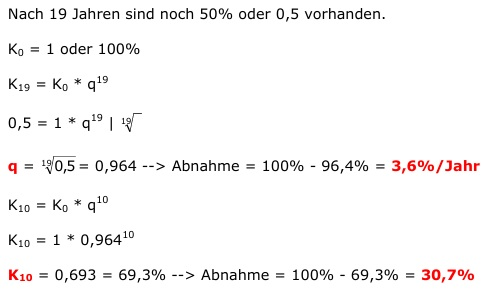

Aufgabe 197 Cadmium wird durch die Nahrung aufgenommen und hat in einem menschlichen Körper eine Halbwertzeit von 19 Jahren. Wie hoch ist die prozentuale Abnahme q pro Jahr? Um wie viel Prozent hat die Menge nach 10 Jahren abgenommen? 